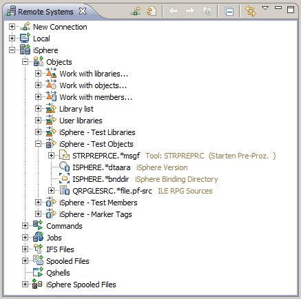

Host Object Decorator
The Host Object Decorator adds the object or member description next to an
object of the RSE tree. The decorator can be enabled/disabled on the
Label Decorations preference page.
The following example demonstrates a decorated RSE tree looks like.
